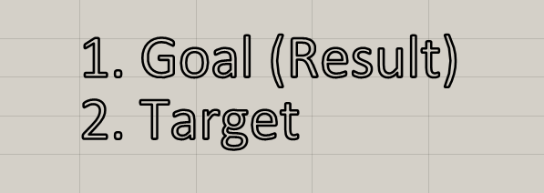
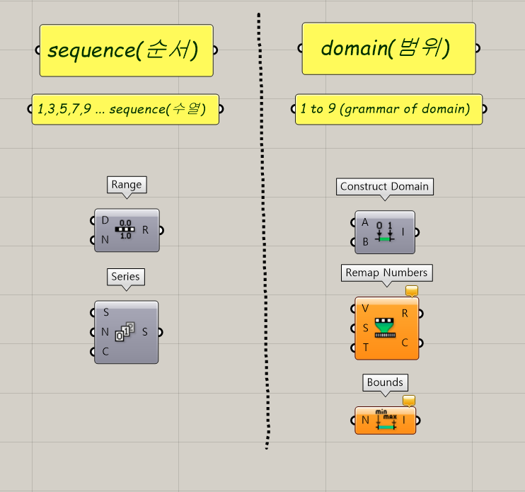
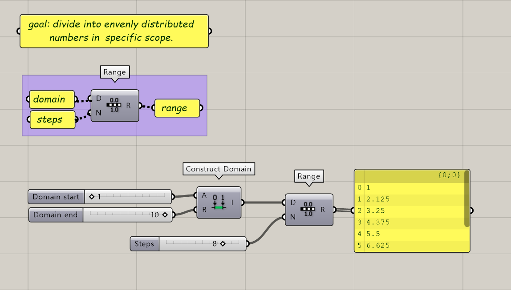
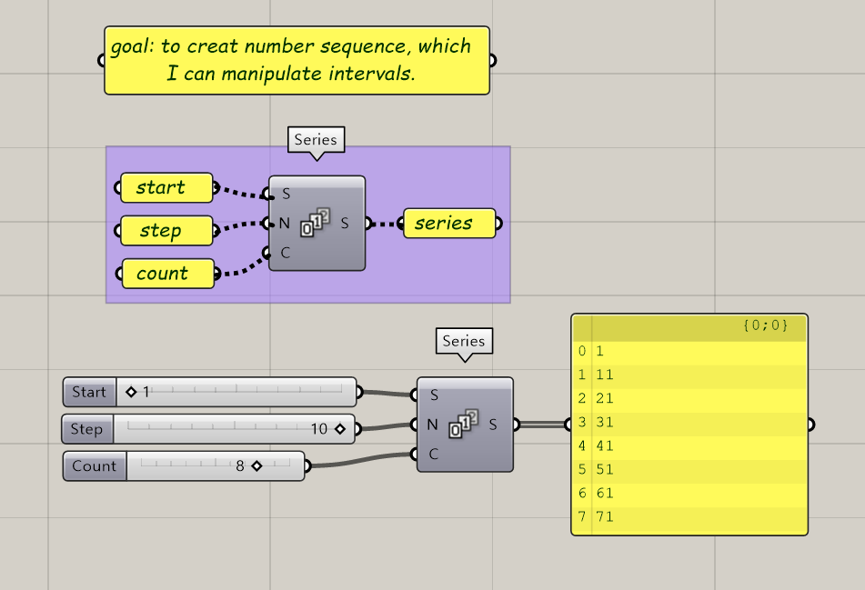
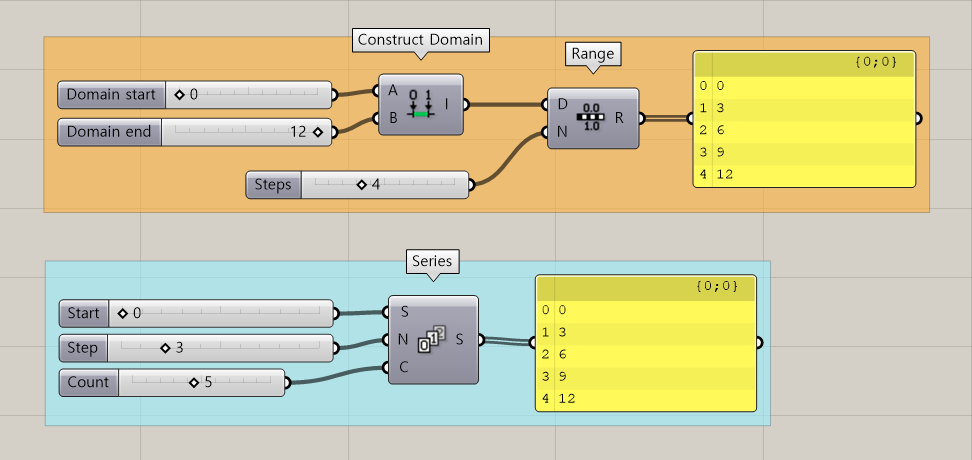
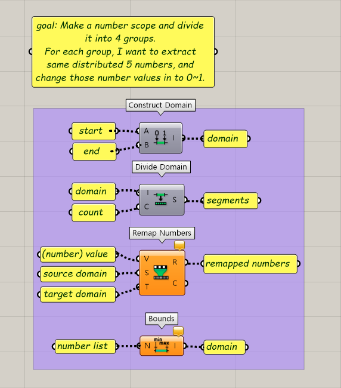
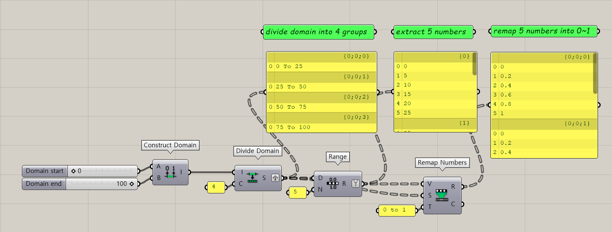

Component Review: Range, Series and domain
To start with, the basic thinking flow when we are using grasshopper is like this.

Always! We should first make clearly about our intended result. Then we should designate targets to accomplish that goal.
All scripts in this page follow this rule, first make sure about our goals, then find important targets to solve it!
This article is about range, series, and domain. As three concepts are quite confusing, I want to discuss about this issue respectively.

Roughly range and series are located in sequence folder, domain is located in domain folder. Folder name gives quick glance what is the difference between the two groups.
Sequence is list of numbers which has numeric rule. Domain represents scope, or area.
Range
Think about circumstances when we need make evenly distributed numbers in certain numeric area. This is our GOAL.
Component for this situation is range. This is our TARGET.
When you see the image below, it needs two inputs, domain and (dividing) steps. Then it will print out range.

As you can see in the script. domain was divided into 8 steps in same interval. Which is 1.125 in this situation.
Series
Our second goal is to create number sequence. Also I want to manipulate the steps btweem numbers.
Then the target will be series component. Let's take a look at the image below.
For series component, we need three inputs. First, starting number, second step, last count.
Before take a glace at the script, let's imagine out result when we have number 1 for starting number, 10 for the step, and 8 for the count.
Does your imagination also calls out for result : 1 -11 -21 -31 -41 -51 -61 -71? Then let's take a look at the result.

Range vs Series
However, if you have a sharp obeservation, you will notice that we can also make series using range component. In that case the start and the end point will be the start and end of the series.
Although we can make series using range component, two has different usage, as range is more poweful when we want to extract some numbers from scope, and seires is more poweful to change steps and counts.

Domain
Domain is out last material for this article. We examined two components first : Range and Series.
However the thing is that we alredy made domains when we were testign our two components on the top.
For range, the domain is 1 to 8, and for the series it's 1 to 71.
As you can see in the second image above, domain always has it's grammar. The grammar is "x to y"
Here are some example to understand domain and other related components.

The goal for the example is like this: Make a number scope and divide it into 4 groups. For each group, I want to extract same distributed 5 numbers, and change those number values in to 0~1.
seems quite complicated, but as you closely look into this message, you will notice that is has three steps cleary.
1. number scope divided into 4 groups. 2. extract 5 numbers from each group 3. change those number values in 0~1.
Our goal is clear then how about our targets? For goal #1 our target is to find way to make number scope and divide those scope into 4 groups. Goal #2 How can we evenly distribute numbers? Goal #3 How can we change number values?
Then we will notice we need at least four key componets.
The key components and key process matches like this.
1-a. Making number scope : Domain
1-b. Divide scope in to 4 groups : Divide Domain
2. Make evenly distributed numbers in each group : Range
3. Changing number value : Remap numbers
Connecting these key processes, the result will be:

Data is graftted and silplified for the easiness for the script, but essential is quite simple. Construct domain - Divide domain - Range - Remap Numbers.
Componets we handled today, are very essential components used in manipulating and grouping data. For the next time, we will go through the real tutorial script to take a look for how these three concepts are really used.